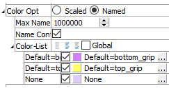

Named ColorOpt Controls
This color option is used for items that will be differentiated — but not scaled — by color. Its principal control is a standard Color_List attribute (cf. the description of the standard Color-List control).
Max Names: Specify the maximum number of names and, correspondingly, the maximum number of unique colors, to be used. If more unique names exist they are assigned the name unknown and colored by a single color.
Name Cont: Specify the existence of name or color controls. When many unique names (or colors) exist, the presence of the controls for each color drastically reduces rendering performance. By unchecking this option, many unique colors can be rendered efficiently.
Color List: Set which items on the list are displayed. The field contains “Select None”, “Select All”, and “Invert Selection” buttons, respectively. If checked, “Global” causes the current pairing of colors and labels to be used for all plots (this is useful, for instance, if a specific, consistent color is desired for group names in all plots). This field is also a container for items on the list.
[Item]: Display (checked) the item (whose label field is [Item]). Set the item color with the swatch control. The settings button (…) may be used to set an “alias” for the item. A read-only display of the current alias is shown after the color swatch.
| Was this helpful? ... | UDEC © 2018, Itasca | Updated: Mar 15, 2024 |